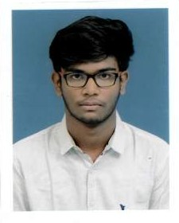

An open-minded and hard-working person who loves exploring new stuffs in the Computer Science field
College of Engineering, Guindy, Chennai. - 2022 to present
Sri Jayendra Silver Jubilee Matric hr.sec school, Tirunelveli. - 2020 to 2022
CEG Tech Forum(CTF) is the official technical club of Anna University,Guindy Campus
The National Service Scheme(NSS) is an Indian government sector public service program conducted by the Ministry of Youth Affairs and Sports.
Indian Talent Olympiad, is one of the leading Olympiad organization in the country.